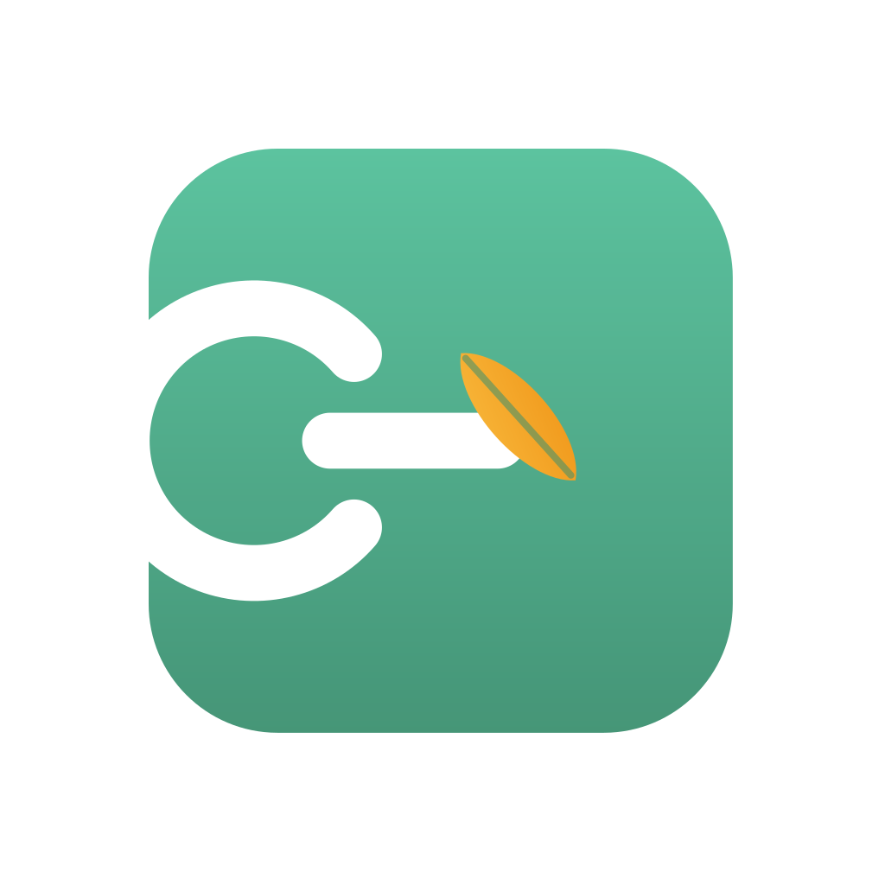
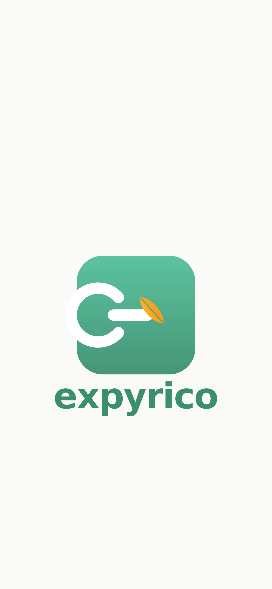
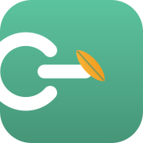

The lowercase e ring in Fresh Sage opens on the right, where its crossbar grows into a Honey leaf sprout — sage for freshness, honey for the “expiring soon” signal the app tracks. Built directly from the Expyrico design spec (§2.10 palette).



brand/
mark-expyrico.svg app-icon mark (vector source)
adaptive-icon-expyrico.svg Android adaptive foreground (vector)
splash-expyrico.svg splash lockup (vector)
logo-expyrico.svg mark + wordmark lockup (vector)
exports/
icon.png 1024×1024 → apps/mobile/assets/icon.png
adaptive-icon.png 1024×1024 → apps/mobile/assets/adaptive-icon.png
splash.png 1284×2778 → apps/mobile/assets/splash.png
icon-whitebg.png 1024×1024 (white-bg variant)
mark-512/256/180.png favicon / sharing thumbnails
logo-2880/1440.png horizontal lockup, white bg